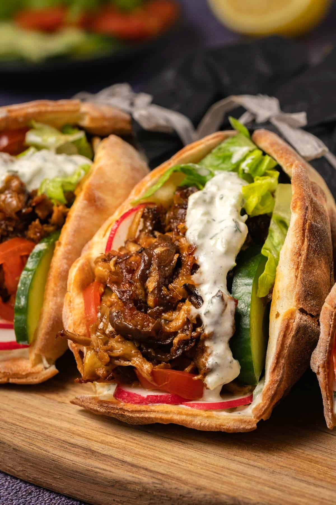

Vegan Pita Gyros Recipe

Description
An easy recipe to make delicious Vegan Pita Gyros
Ingredients
- ~160 Grams of Vegan Chicken Pieces
- My favorite are the Vivera Vegan Chicken Pieces
- 1 Tablespoons of Gyros spices mix
- I'll be using Verstegen Gyros Spice mix
- Pita bread
- Red onion
- Tomato
- Lettuce
- Tzatziki
Steps
Vegan Gyros
- Bake the Vegan chicken pieces till they're ready for consumption
- Add water (usually about 1-2 cups) to the pan till all the pieces of water are below the surface of the water
- Add a tablespoon of the Gyros spice mix to the water and stir well
- Let the mixture of vegan pieces and the spice water simmer at a low heat till all the water has evaporated.
- Make sure to stir occasionally
Prepare the pita
- While the mixture is simmering, spread tzatziki over the pita(s)
- Add Lettuce to the pita
- Add some slices of tomato
- Add some slices of red onion
- Once the vegan gyros has finished simmering, add the vegan gyros
- Roll up the pita and enjoy!